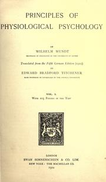

《生理心理学原理》
书·Wilhelm Wundt, 1874·Principles of Physiological Psychology, Vol. 1

冯特把生理学实验方法用于研究感觉与意识的奠基性著作，此后他在 1879 年建立了莱比锡的心理学实验室。德文第一版 1873–1874 年。中译名未核实，此处中文题名为直译或沿用旧数据。
- 作者
- Wilhelm Wundt
- 年份
- 1874
- 难度
- 深读
- 类型
- 历史
- 所属学派
- 实验心理学
- 核心理论
- 构造主义与内省分析、心理计时法
版本
- 中文版 《生理心理学原理》 [德] 威廉·冯特 · [英] 铁钦纳 / 李葆嘉 导读 / 李炯英 李葆嘉 注释 / 爱德华·布雷福德·铁钦纳 译 · 上海译文出版社 · 2022 豆瓣页面 ↗
- 英文版 Principles of Physiological Psychology, Vol. 1 Wilhelm Wundt (trans. Edward B. Titchener) · Macmillan (English translation of the 5th German edition) · 1904 Open Library ↗